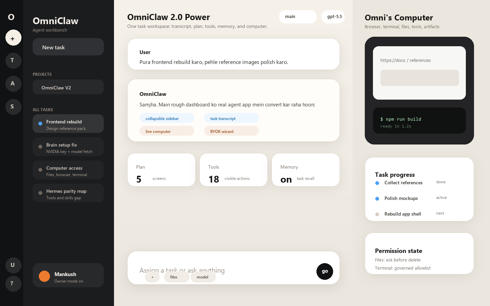
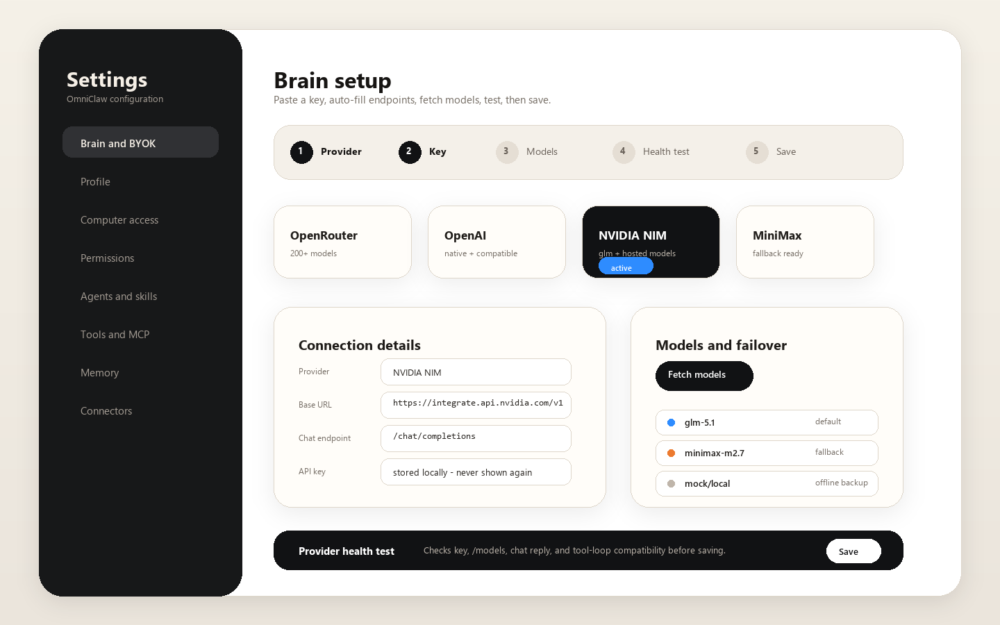
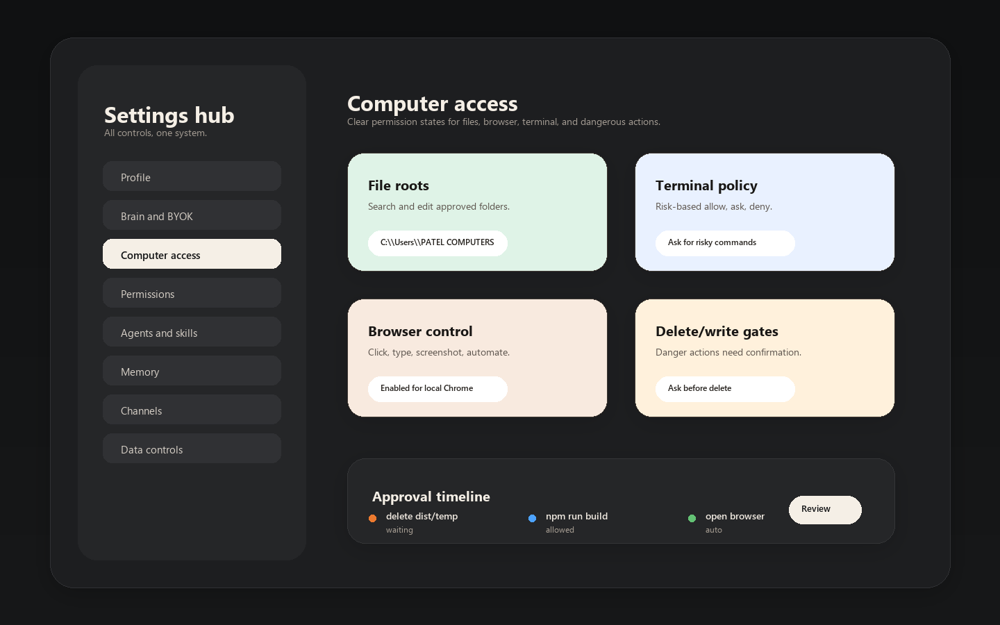
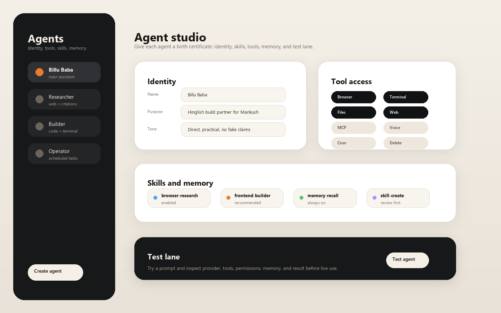
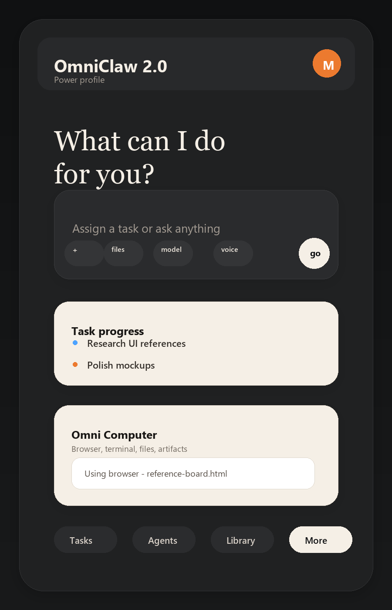

Desktop agent workbench
Sidebar, task transcript, composer, progress, and live computer in one screen.

Brain and BYOK setup
Provider preset, base URL, key, model fetch, health test, and save flow.

Settings and permissions
Computer access, file roots, terminal policy, browser access, and approval timeline.

Agent studio
Identity, tools, skills, memory, and a safe test lane for every agent.

Mobile shell
First-class mobile view with drawer, composer, progress, and computer card.
